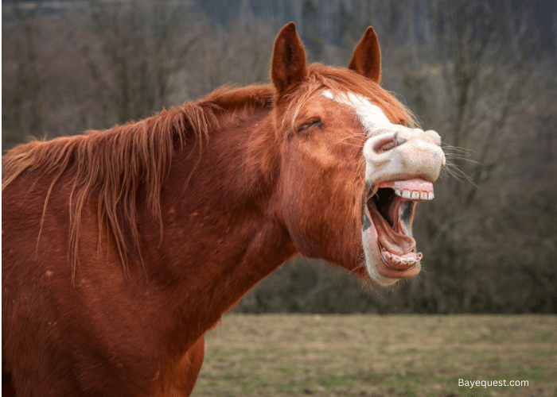

A case study in interpretation, told in five parts
Vienna, 1908. Hans is not quite five years old — cheerful, curious, and unusually verbal for his age. His parents are devoted followers of Dr. Freud's work, and his father has taken to recording Hans's sayings and questions in detailed letters, which he sends to Freud almost as a running case file.
For months, Hans has shown an early and persistent interest in "widdlers" — his word for genitals. He's noticed that horses, dogs, and other animals have them, and that his mother and baby sister do not. He asks frequent questions about who has one and who doesn't.
One day, his mother catches him with his hand on his penis. She warns him sharply: if he keeps doing that, she will call the doctor to cut his widdler off.
Hans says nothing else about it at the time. But not long after, he starts refusing to leave the house.
Before reading on, write your first hypothesis. What might explain what's happening with Hans so far?
Hans's father is often away on business, leaving Hans alone with his mother for long stretches. Hans seems to want it that way — he shows little interest in his father coming home, and whenever his father is away, Hans sleeps in his mother's bed with her. His mother is very close with him; she bathes him regularly, careful to keep him from touching himself while she does.
It's around this time that Hans's refusal to leave the house turns into something more specific. On a walk with his mother, Hans has a sudden anxiety attack in the street and begs to go home. When he's finally able to explain it, he says:
The fear narrows further. Soon, Hans is afraid specifically of white horses. At one point he even becomes afraid that a horse might come into his own room.

Update your theory based on these new details.
Over the following weeks, Hans's father records the fear growing more particular still:
Hans's parents aren't sure which of these — if any — is the real trigger. The fear seems to have arrived all at once, fully formed, rather than building gradually.
Update your theory. Which fact matters most, and why?
When Hans was around three and a half — well before the horse fear began — his mother gave birth to a baby girl. Hans was jealous of her from the start, and that jealousy never fully went away.
Around the same period as the horse phobia, Hans also develops a fear of water — specifically, a fear of going underwater. When his father presses him on it, Hans's answers seem, to his father, to circle back to his sister: whether she might go underwater, whether she might not come back up.
Hans also describes a dream to his father: a plumber comes and takes away his bottom and his widdler, and gives him new, bigger ones instead.
Update your theory with the sister and water-fear details factored in.
Hans describes another dream to his father, one that Freud will later take particular interest in:
Around the same time, Hans is caught playing with dolls, pretending to have children of his own. When his father tells him a boy cannot have children, Hans doesn't back down — he simply reorganizes the family. His mother, he decides, is the children's mother. He is their father. And his own father becomes the children's grandfather.
Write your best full theory of what's going on with Hans, using everything you've read so far. Try to account for the widdler threat, the horse phobia's specific details, the sister's birth, the water fear, the giraffe dream, and the dolls scene all in one account if you can.
Freud's aim was to document a child's development up to around age five, and he treated Hans's case as strong evidence for his emerging theory of infantile sexuality — in particular, what he called the Oedipus complex.
Freud's interpretation, in brief:
Not long after the plumber dream and the dolls scene, Hans's phobia faded. Freud took this as confirmation: once Hans's unconscious conflict had been made conscious, and he'd found a way to identify with his father rather than fear him, the anxiety no longer needed the horse to express itself.
Do you agree with Freud's reading of Hans's case — or does another explanation account for the evidence better?
Consider these alternative lenses as you write:
Could this simply be classical conditioning? Hans directly witnessed a frightening event (a horse collapsing) and overheard a direct warning about a horse biting. No unconscious content is required — just an association formed through direct experience.
Could this reflect a young child's reasoning limitations — overgeneralizing from one frightening event, or struggling to separate "horses in general" from "that one horse"?
John Bowlby later argued the case actually shows how strong the mother-child attachment bond is. Hans's mother had, at one point, threatened to leave the family — a real threat of separation. Bowlby suggested Hans's fear could be an anxious response to that threat, rather than evidence of castration anxiety or Oedipal rivalry.
Could Hans simply have an anxiety-prone temperament, with the street incident and the overheard warning acting as triggers rather than root causes?
Almost everything in this case reached Freud secondhand, through a father who was already a devoted follower of Freud's theories — and several of Hans's "agreements" came after his father put a specific interpretation to him directly. Whatever explanation you choose, it's worth asking how much that shaped which details got recorded and reported in the first place.
Write a short response (aim for one strong paragraph, or more if you want) that either:
There's no single correct answer here — this is a real historical case that psychologists still debate. What matters is how well your interpretation fits the evidence you were given.